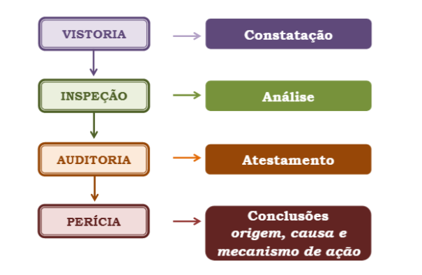
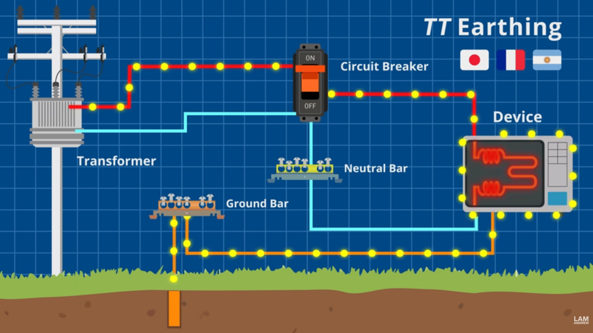
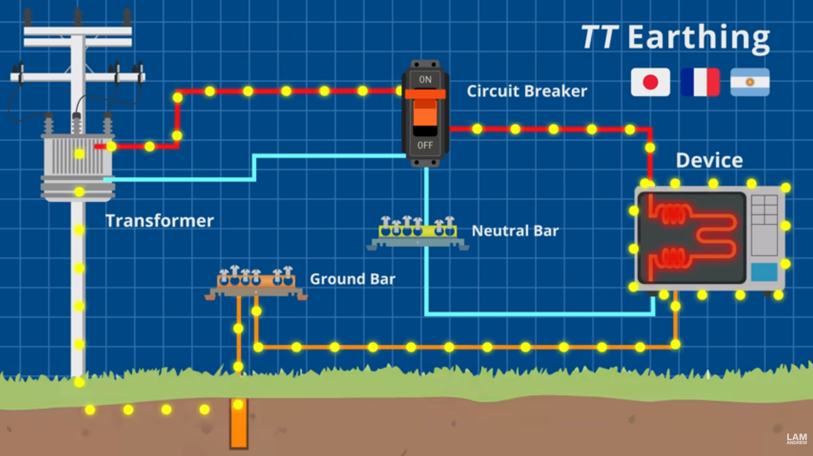
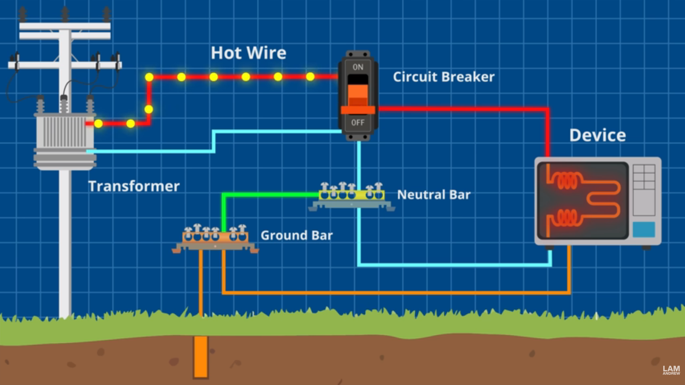
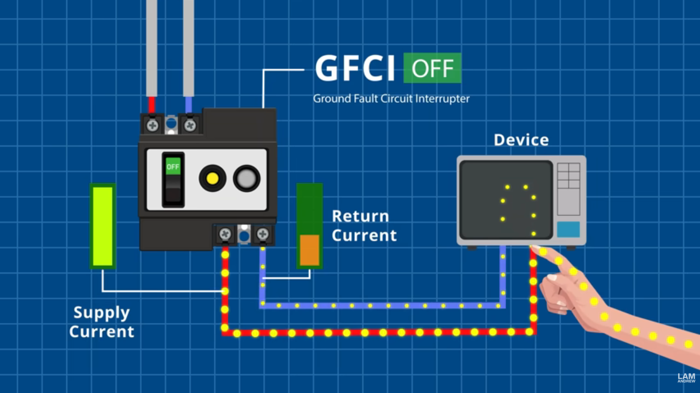

Perícias e Auditoria em Edificações
Engenharia Diagnóstica
Faculdade EDUFOR
21 de novembro de 2025
Engenharia Diagnóstica
Engenharia Diagnóstica
- Conceito:
O conhecimento científico, que juntamente com a Engenharia de Avaliações compõe os dois braços de sustentação da moderna Engenharia Legal
É a arte de criar ações proativas, por meio dos diagnósticos, prognósticos e prescrições técnicas, visando a qualidade total.
- Aplicabilidade:
- Consiste na aplicação do conjunto de ferramentas, desde a criação do edifício até a sua utilização, para servir ação pró-ativa de QUALIDADE TOTAL ou subsidiar as questões técnicas legais.
Ferramentas da Engenharia Diagnóstica
Ferramentas da Engenharia Diagnóstica
Ferramentas da Engenharia Diagnóstica
- Vistoria:
- É a constatação técnica de determinado fato, condição ou direito relativo a um objeto. Referida ferramenta visa consignar tecnicamente algo relevante num determinado momento para posterior análise ou simples arquivamento. As vistorias podem ser utilizadas judicialmente através das 14 ações cautelares de produção antecipada de provas, e extrajudicialmente para bem registrar algo de interesse;
Ferramentas da Engenharia Diagnóstica
- Inspeção:
- Ê a análise técnica de determinado fato, condição ou direito relativo a um objeto, com base em informações genéricas e interpretação baseada na experiência do inspetor. As inspeções visam analisar e classificar tecnicamente algo importante, em geral relacionado à segurança, manutenção ou outro interesse técnico;
Ferramentas da Engenharia Diagnóstica
- Auditoria:
- É o testamento técnico de conformidade, ou não, de um fato, condição ou direito relativo a um objeto, A auditoria técnica tem a finalidade de controlar algo passível de ser confrontado com índice ou exigências estabelecidas em normas, regulamentos, legislações ou contratos;
Ferramentas da Engenharia Diagnóstica
- Perícia:
- É a apuração técnica da origem, causa e mecanismo de ação de um fato, condição ou direito relativo a um objeto. A perícia visa determinar tecnicamente a responsabilidade de algo, para posterior reparação;
Ferramentas da Engenharia Diagnóstica
- Consultoria:
- É a prescrição técnica a respeito de um fato, condição ou direito relativo a um objeto. A reparação de problema técnico requer a indicação das correções através da ferramenta representada pela consultoria.
Terminologia da Engenharia Diagnóstica
- SINTOMATOLOGIA TÉCNICA DA EDIFICAÇÃO
- Constatações e análises dos sintomas e condições físicas das anomalias construtivas e falhas de manutenção
- ETIOLOGIA TÉCNICA DA EDIFICAÇÃO
- Determinação dos efeitos, origens, causas e mecanismos de ação, agentes e fatores de agravamento das anomalias construtivas e falhas de manutenção
- TERAPÊUTICA DA EDIFICAÇÃO
- Estudos das reparações das anomalias construtivas e falhas de manutenção
- PATOLOGIA DA EDIFICAÇÃO – Estudo que se ocupa da natureza e das modificações das condições físicas e/ou funcionais produzidas pelas anomalias construtivas e falhas da edificações, através de auditorias, perícias e ensaios técnicos
Principais problemas tratados na Eng.a Diagnóstica
- São recorrentes no mercado atual:
- Os problemas diversos em sistemas de impermeabilização
- Usualmente por falta de projeto e má execução de detalhes
- Descolamento e desplacamento de revestimentos de fachadas
- Devido a falta de projeto de sistema de fachada e má execução
- Problemas em fundações e/ou estruturas de contenção
- Problemas em instalações elétricas ou hidrossanitárias
- Materiais ruins
- Falta de aterramento
- Falta de projeto
- Má execução
- Os problemas diversos em sistemas de impermeabilização
Principais problemas tratados na Eng.a Diagnóstica
Programa Reforma Casa Brasil
Principais problemas tratados na Eng.a Diagnóstica
Principais problemas tratados na Eng.a Diagnóstica
- Falta de aterramento elétricos e/ou IDR:
- 15/11/2025:
- 10/11/2025:
- 31/10/2025:
- 27/10/2025:
- 30/09/2025
- “Fatos Inusitados”, 07/01/2025:
- 17/09/2024:
Principais problemas tratados na Eng.a Diagnóstica
- Lei 11337
- Art. 1º As edificações cuja construção se inicie a partir da vigência desta Lei deverão obrigatoriamente possuir sistema de aterramento e instalações elétricas compatíveis com a utilização do condutor-terra de proteção, bem como tomadas com o terceiro contato correspondente.
Principais problemas tratados na Eng.a Diagnóstica

Circuito funcionando normalmente - Aterramento TT
Principais problemas tratados na Eng.a Diagnóstica
Circuito em surto - Aterramento TN-S
Principais problemas tratados na Eng.a Diagnóstica
Circuito vazando corrente- Aterramento TT
Principais problemas tratados na Eng.a Diagnóstica

Circuito vazando corrente- Aterramento TT
Principais problemas tratados na Eng.a Diagnóstica

NBR 5410: Proteção contra choques elétricos
Principais problemas tratados na Eng.a Diagnóstica

Circuito em surto - Aterramento TN-S
Principais problemas tratados na Eng.a Diagnóstica

Circuito em surto - Aterramento TN-S
Principais problemas tratados na Eng.a Diagnóstica
Circuito desarmado - Aterramento TN-S
Principais problemas tratados na Eng.a Diagnóstica

Uso de dispositivo diferencial-residual de alta sensibilidade
- O uso do DR, no Brasil, não dispensa o aterramento, como exposto em 5.1.3.2.1.2
Principais problemas tratados na Eng.a Diagnóstica

Dispositivo Diferencial-Residual: funcionamento normal
Principais problemas tratados na Eng.a Diagnóstica
Dispositivo Diferencial-Residual: desligado devido à fuga de corrente
Principais problemas tratados na Eng.a Diagnóstica

Dispositivo Diferencial-Residual: dados técnicos. Menos de 30ms e 30mA
Principais problemas tratados na Eng.a Diagnóstica

Dispositivo Diferencial-Residual: mortes zero no Japão nos últimos anos
- No Japão o IDR é a principal proteção e o aterramento é complementar!
Principais problemas tratados na Eng.a Diagnóstica

IDR: onde é obrigatório?
Principais problemas tratados na Eng.a Diagnóstica

IDR: onde é obrigatório?
- IDR funciona mesmo sem aterramento?
>}}
IDR
Preço do IDR
Principais problemas tratados na Eng.a Diagnóstica
Principais problemas tratados na Eng.a Diagnóstica
ABNT NBR 15.575 - Norma de Desempenho
Norma de Desempenho: Escopo
- Escopo:
A NBR 15575 estabelece os requisitos e critérios de desempenho que se aplicam às edificações habitacionais, como um todo integrado, bem como serem avaliados de forma isolada para um ou mais sistemas específicos;
A NBR 15575 não se aplica a obras em andamento ou a edificações concluídas até a data da entrada em vigor desta Norma. Também não se aplica a obras de reformas nem de “retrofit”, nem edificações provisórias;
Norma de Desempenho: Introdução
Norma Prescritiva vs. Normas de desempenho:
- As Normas prescritivas estabelecem requisitos com base no uso consagrado de produtos ou procedimentos, buscando o atendimento aos requisitos dos usuários de forma indireta.
- As Normas de desempenho traduzem os requisitos dos usuários em requisitos e critérios, e são consideradas complementares às Normas prescritivas, sem substituí-las.
A abordagem desta Norma explora conceitos que muitas vezes não são considerados em Normas prescritivas específicas, por exemplo, a durabilidade dos sistemas, a manutenibilidade da edificação e o conforto tátil e antropodinâmico dos usuários.
O foco desta Norma está nas exigências dos usuários para o edifício habitacional e seus sistemas, quanto ao seu comportamento em uso;
A forma de estabelecimento do desempenho é comum e pensada por meio da definição de requisitos (qualitativos), critérios (quantitativos ou premissas) e métodos de avaliação, os quais permitem a mensuração clara do seu atendimento;
Todas as disposições contidas nesta Norma aplicam–se aos sistemas que compõem edificações habitacionais, projetados, construídos, operados e submetidos a intervenções de manutenção que atendam às instruções específicas do respectivo manual de uso, Operação e manutenção.
Requisitos e critérios particularmente aplicáveis a determinado sistema são tratados separadamente em cada parte desta Norma.
Norma de Desempenho: Introdução
- No caso de conflito, diferença ou divergência de critérios ou métodos entre as normas prescritivas e esta norma, deve-se atender os critérios mais exigentes;
Norma de Desempenho: Terminologia
- Termos e Definições:
- Desempenho: comportamento em uso de uma edificação e de seus sistemas;
- Requisitos de desempenho: condições que expressam qualitativamente os atributos que a edificação habitacional e seus sistemas devem possuir, a fim de que possam satisfazer as exigências do usuário;
- Critérios de desempenho: especificações quantitativas dos requisitos de desempenho, expressos em termos de quantidades mensuráveis, a fim de que possam ser objetivamente determinados;
- Especificações de desempenho: Conjunto de requisitos e critérios de desempenho estabelecido para a edificação ou seus sistemas. As especificações de desempenho são uma expressão das funções exigidas da edificação ou de seus sistemas e que correspondem a um uso claramente definido; no caso desta Norma, referem-se ao uso habitacional de edificações;
Norma de Desempenho: Terminologia
- Termos e Definições:
- Componente: unidade integrante de determinado elemento da edificação, com forma definida e destinada a cumprir funções específicas. (Ex.: bloco de alvenaria, telha, folha de porta);
- Elemento: parte de um sistema com funções específicas. Geralmente é composto por um conjunto de componentes. (Ex.: parede de vedação de alvenaria, painel de vedação pré-fabricado, estrutura de cobertura);
- Sistema: a maior parte funcional do edifício. Conjunto de elementos e componentes destinados a cumprir com uma macrofunção que a define. (Ex.: fundação, estrutura, vedações verticais, instalações hidrossanitárias, cobertura);
Norma de Desempenho: Terminologia
- Termos e Definições:
- Degradação: redução do desempenho devido à atuação de um ou de vários agentes de degradação;
- Agente de degradação: tudo aquilo que agindo sobre um sistema contribui para reduzir seu desempenho. (Ex.: Lençol Freático, Névoa Salina, CO2, Ação do Vento);
- Ruína: característica do estado-limite último, por ruptura ou por perda de estabilidade ou por deformação acima dos limites de estado limite último estabelecido em normas;
- Durabilidade: capacidade da edificação ou de seus sistemas de desempenhar suas funções, ao longo do tempo e sob condições de uso e manutenção especificadas;
Norma de Desempenho: Terminologia
- Termos e Definições:
- Usuário: pessoa que ocupa a edificação habitacional;
- Exigências do usuário: conjunto de necessidades do usuário da edificação habitacional a serem satisfeitas por este (e seus sistemas), de todo a cumprir com suas funções;
- Estado da arte: Estágio de desenvolvimento de uma capacitação técnica em um determinado momento, em relação a produtos, processos e serviços, baseado em descobertas científicas, tecnológicas e experiências consolidadas e pertinentes;
- Falha: ocorrência que prejudica a utilização do sistema ou do elemento, resultando em desempenho inferior ao requerido
- Manifestação Patológica: irregularidade que se manifesta no produto em função de falhas no projeto, na fabricação, na instalação, na execução, na montagem, no uso ou na manutenção, bem como problemas que não decorram do envelhecimento natural;
Norma de Desempenho: Terminologia
- Termos e Definições:
- Manutenção: conjunto de atividades a serem realizadas ao longo da vida total da edificação para conservar ou recuperar a sua capacidade funcional e de seus sistemas constituintes de atender as necessidades e segurança dos seus usuários;
- Manutenibilidade: grau de facilidade de um sistema, elemento ou componente de ser mantido ou recolocado no estado no qual possa executar suas funções requeridas, sob condições de uso especificadas, quando a manutenção é executada sobre condições determinadas, procedimentos e meios prescritos;
- Inspeção predial de uso e manutenção: análise técnica, através de metodologia específica, das condições de uso e de manutenção preventiva e corretiva da edificação;
- Manual de operação, uso e manutenção: documento que reúne as informações necessárias para orientar as atividades de conservação, uso e manutenção da edificação e operação dos equipamentos;
Norma de Desempenho: Terminologia
- Termos e Definições:
Vida útil (VU ou service life): período de tempo em que um edifício e/ou seus sistemas se prestam às atividades para as quais foram projetados e construídos considerando a periodicidade e correta execução dos processos de manutenção especificados no respectivo Manual de Uso, Operação e Manutenção (a vida útil não pode ser confundida com prazo de garantia legal e certificada);
Vida Útil de Projeto (VUP ou design life): período estimado de tempo para o qual um sistema é projetado a fim de atender aos requisitos de desempenho estabelecidos nesta norma, considerando o atendimento aos requisitos das normas aplicáveis, o estágio do conhecimento no momento do projeto e supondo o cumprimento da periodicidade e correta execução dos processos de manutenção especificados no respectivo Manual de Uso, Operação e Manutenção (a VUP não deve ser confundida com tempo de vida útil, durabilidade, prazo de garantia legal e certificada);
Norma de Desempenho: VUP

Fonte: ABNT (2021), p. 81
Norma de Desempenho: Requisitos do usuário
- Requisitos do Usuário:
- SEGURANÇA:
- Segurança estrutural;
- Segurança contra o fogo;
- Segurança no uso e na operação;
- HABITABILIDADE:
- Estanqueidade;
- Desempenho térmico;
- Desempenho acústico;
- Desempenho lumínico;
- Saúde, higiene e qualidade do ar;
- Funcionalidade e acessibilidade;
- Conforto táctil e antropodinâmico;
- SEGURANÇA:
Norma de Desempenho: Requisitos do usuário
Requisitos do Usuário:
- HABITABILIDADE:
- Funcionalidade e acessibilidade;
- Conforto táctil e antropodinâmico;
- SUSTENTABILIDADE:
- Durabilidade;
- Manutenibilidade;
- Impacto ambiental
- HABITABILIDADE:
Norma de Desempenho
- Níveis de Desempenho
- Em função das necessidades básicas de segurança, saúde, higiene e de economia, são estabelecidos para os diferentes sistemas requisitos mínimos de desempenho (M) que devem ser considerados e atendidos;
Norma de Desempenho: Incumbências
- Incumbências dos Intervenientes:
- Fornecedor de insumo, material, componente e/ou sistema
- Projetista
- Construtor e incorporador
- Usuário
Norma de Desempenho: Incumbências
- Incumbências dos Intervenientes:
- Fornecedor de insumo, material, componente e/ou sistema
- Cabe ao fornecedor de sistemas caracterizar o desempenho de acordo com esta norma. Convém que fabricantes de produtos, que sem normas brasileiras específicas ou que não tenham seus produtos com o desempenho caracterizado, que forneçam resultados comprobatórios do desempenho de seus produtos com base nesta norma ou em normas específicas internacionais ou estrangeiras;
- Fornecedor de insumo, material, componente e/ou sistema
Norma de Desempenho: Incumbências
- Incumbências dos Intervenientes:
- Projetistas:
- Os projetistas devem estabelecer a vida útil de projeto (VUP) de cada sistema que compõe esta parte,com base na Seção
- Cabe ao projetista o papel de especificar materiais, produtos e processos que atendam ao desempenho mínimo estabelecido nesta parte da ABNT NBR 15575 com base nas normas prescritivas e no desempenho declarado pelos fabricantes dos produtos a serem empregados em projeto.
- Projetistas:
Norma de Desempenho: Incumbências
- Incumbências dos Intervenientes:
- Incoporador:
Salvo convenção escrita, é da incumbência do incorporador, de seus prepostos e/ou dos projetistas envolvidos, dentro de suas respectivas competências, e não da empresa construtora, a identificação dos riscos previsíveis na época do projeto, devendo o incorporador, neste caso, providenciar os estudos técnicos requeridos e prover aos diferentes projetistas as informações necessárias.
Como riscos previsíveis, exemplifica-se: presença de aterro sanitário na área de implantação do empreendimento, contaminação do lençol freático, presença de agentes agressivos no solo e outros riscos ambientais
- Incoporador:
Norma de Desempenho
- Durabilidade:
- O termo ‘durabilidade’ expressa o período esperado de tempo em que um produto tem potencial de cumprir as funções a que foi destinado, num patamar de desempenho igual ou superior àquele predefinido. Para tanto, há necessidade de correta utilização, bem como de realização de manutenções periódicas em estrita obediência às recomendações do fornecedor do produto, sendo que as manutenções devem recuperar parcialmente a perda de desempenho resultante da degradação, conforme ilustrado na Figura 1.
Norma de Desempenho: Vida útil

Recuperação do desempenho por ações de manutenção (Fonte: NBR 15575-1
Lei de Sitter

Lei de Sitter
Norma de Desempenho: Vida útil
Para se atingir a VUP, os usuários devem desenvolver os programas de manutenção segundo ABNT NBR 5674.
Os usuários devem seguir as instruções do manual de uso, operação e manutenção, as instruções dos fabricantes de equipamentos e recomendações técnicas das inspeções prediais.
A inspeção predial configura-se como ferramenta útil para avaliação das condições de conservação das edificações em geral, para atestar se os procedimentos de manutenção adotados são insuficientes ou inexistentes, além de fornecer subsídios para orientar o plano e programas de manutenção, através das recomendações técnicas indicadas no documento de inspeção predial.
Garantia de obra
Garantia Legal: Introdução
- Em obra nova, três situações podem ocorrer (Meirelles 2013, 300):
- Se a obra estiver perfeita, de acordo com o respectivo projeto e sem falhas aparentes, o dono é obrigado a recebê-la;
- se a obra desobedeceu os planos, afastou-se das regras técnicas ou apresentou defeitos, o dono pode rejeitá-la;
- alternativamente, recebê-la com abatimento de preço.
Garantia Legal: vícios aparentes ou ocultos
- Tratam-se de vícios ou defeitos aparentes
- Ainda que o dono tenha recebido a obra sem percebê-las, poderá reclamar pela sua correção, ou indenização, no prazo de noventa dias, a contar do momento da entrega da obra, nos termos do art. 26, inciso II, e § 1º do CDC.
- Já para os vícios ou defeitos ocultos, são aquele que “só vão aparecer depois do recebimento da obra e de sua utilização pelo respectivo morador”.
- São infiltrações, vazamentos, rachaduras, mau funcionamento das instalações elétricas ou hidráulicas, etc.
Garantia Legal: vícios redibitórios
- Vício redibitório: “é um vício grave existente no produto adquirido, mas não percebido no momento da aquisição; vício de tal gravidade que, se o adquirente tivesse conhecimento dele antes do ajuste, não o teria adquirido, ou pleitearia abatimento no preço.”
- “Prazo para pleitear o desfazimento do negócio é relativamente curto: um ano a partir da entrega definitiva do imóvel, ou sua metade se já estiver na posse do mesmo.”
- “Não obstante, quando o vício, por sua natureza, só puder ser conhecido mais tarde, o prazo contar-se-á do momento em que o adquirente dele tiver ciência…”
Garantia Legal: prazo quinquenal
- Segundo Meirelles (2013, 301–2):
- O contrato de construção de obra de engenharia (por empreitada ou por administração) é o único que dispõe de uma prazo de garantia legal de cinco anos para o seu objeto, estabelecido no art. 618 do Código Civil, originalmente aplicável apenas a problemas envolvendo a solidez e segurança da edificação!
- Problema que se coloca pe saber se o construtor deve responder por todos os vícios ou defeitos ocultos que vierem a surgir no prazo de cinco anos, ou se tal prazo só abrange os vícios que afetem a solidez e segurança da obra.
- A jurisprudência pátria encarregou-se de ampliar esse conceito, para nele incluir casos em que os defeitos não tinham como consequência a ruína do edifício, mas poderiam comprometer a saúde e a segurança de seus moradores, ainda que num futuro mediato, como ocorre com as rachaduras, infiltrações, queda de revestimentos, etc.
Garantia: prazo quinquenal
- Segundo Meirelles (2013, 303):
- Como lembra Mário Moacyr Porto, “inclui-se na garantia quinquenal todo defeito que compromete a destinação do imóvel, pois segurança também significa garantia de que a construção serve, a contento, ao fim para que foi construída ou destinada.”
- Sem dúvida, há uma zona cinzenta entre os vícios ocultos que venham a surgir durante o prazo de garantia de cinco anos.
Garantia Legal: o Código de Defesa do Consumidor (CDC)
- Segundo Meirelles (2013, 304–5):
- O CDC dispõe diferentemente do Código Civil. Enquanto este considera vício e defeito como sinônimos, o CDC os distingue.
- O defeito constitui uma falha mais grave que põe em risco a segurança do consumidor.
- Dispõe o CDC que os fornecedores de produtos duráveis respondem solidariamente pelos vicios de qualidade ou quantidade que os tornem impróprios ou inadequados ao consumo a que se destinam, ou lhes diminuam o valor (art. 18), o mesmo ocorrendo com o fornecedor de serviços (art. 20).
- O CDC não estabeleceu prazos fixos de garantia dentro dos quais os vícios ocultos devem surgir, para que possam ser reclamados.
- Considera-se que essa garantia deve estender-se pelo prazo razoável de durabilidade que o próprio fornecedor transmite ao consumidor.
Norma de Garantia: Introdução
- As garantias que o incorporador, construtor ou o prestador de serviços de construção proporciona aos proprietários de edificações quanto aos sistemas construtivos, componentes e equipamentos, relacionados à solidez e segurança, são definidas em legislação vigente.
- No entanto, os itens não enquadrados em solidez e segurança não têm prazos de aparecimento de falhas que suscitem o direito à garantia em legislação vigente.